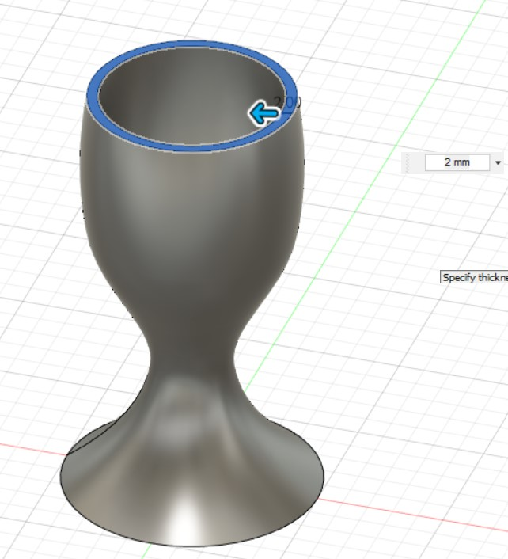

Computer Aided Design
Egg cup
I sketched out the circle at first using Center Diameter Circle (s). Under construct, offset plane allows me to draw another circle above.


After that, using loft under solid to create the shape of egg cup

Using shell under tools > modify, to create a hole

Editing
I learned that under the timeline, I can right-click and edit shape. If the end look doesn't look right, this will allow me to edit the shape that I want